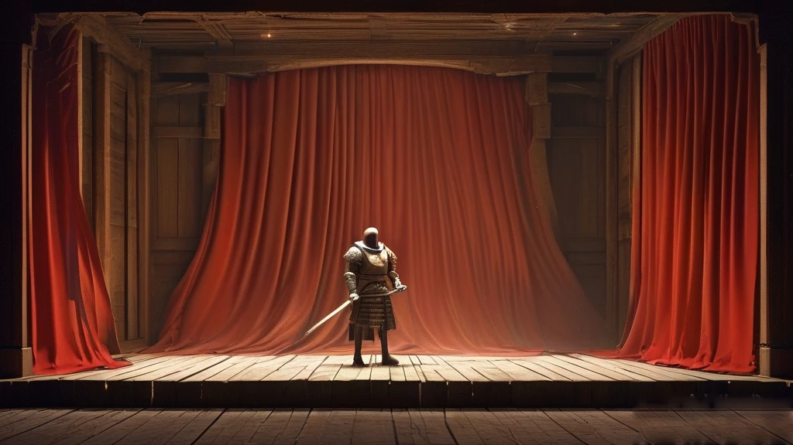
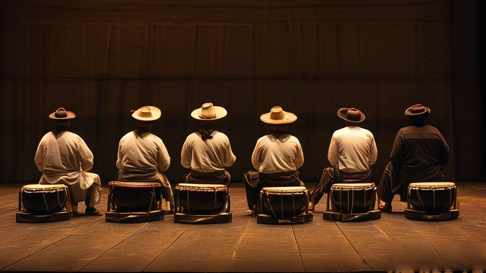
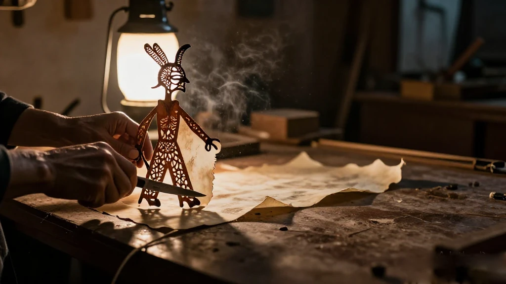
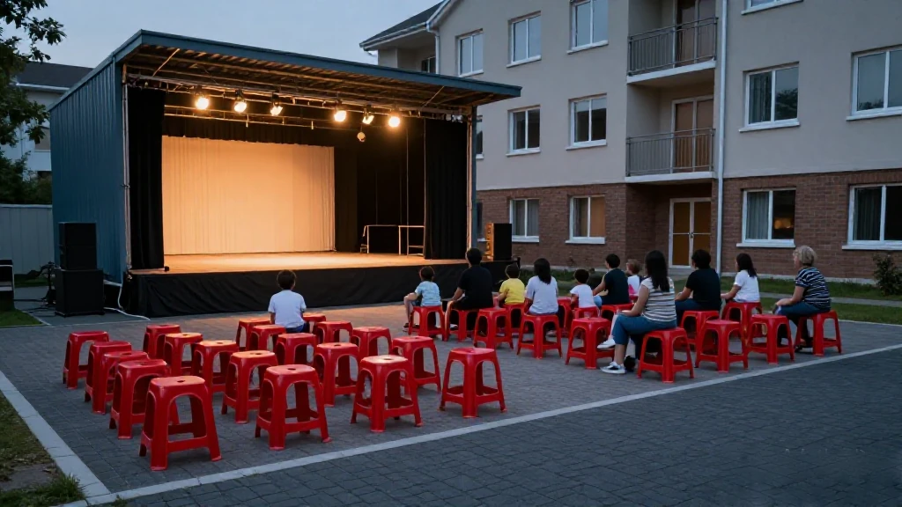
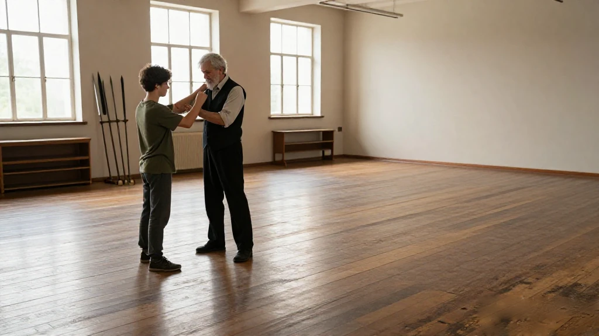
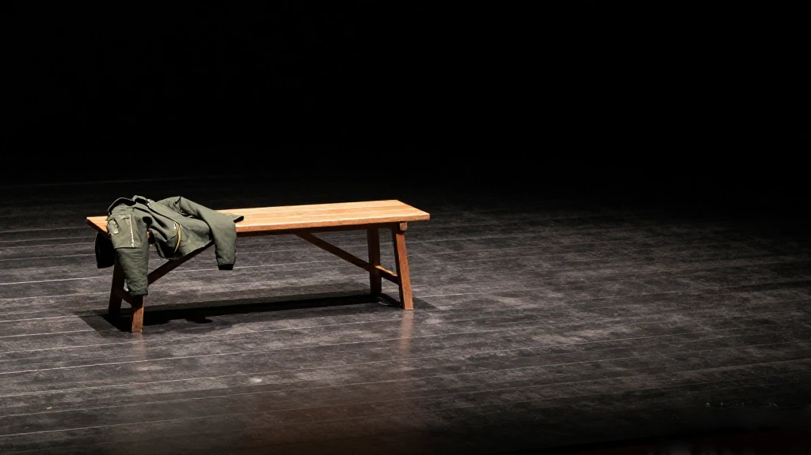

圖片由 AI輔助創作Image by AI
【鄭哥點評】欄目：鄭哥博客點評｜日期：2026-11-15
汕尾有九項國家級非遺，四項係戲：正字戲、白字戲、西秦戲、陸豐皮影戲。三個劇種同一年（2006）入首批國家級名錄，然後三個都只剩一支隊伍。八百年傳落嚟嘅東西，帳簿上寫住「一個團」。台上鑼鼓照樣響，台下凳仔換咗人。
圖片由 AI輔助創作Image by AI
一、三種話，一檯戲
白字戲用海豐、陸豐方言唱，元末明初由閩南流入粵東，吸納竹馬、錢鼓、漁歌同潮劇音樂，改用當地方言之後才成自己的腔口。起初它同潮劇同名：海陸豐這個叫「南下白字」，潮州那個叫「潮州白字」。
樂隊七個人，俗稱「七張交椅」：一對鼓、一對吹、一對鑼，加一副大鐃。最特別係「半夜反」——上半夜講官話演武戲，下半夜轉方言演文戲。我判斷：官話負責氣派，方言負責入心，一個戲棚解決兩個問題。
來源：中國非物質文化遺產網《白字戲》，項目序號218、編號Ⅳ-74，2006年第一批國家級名錄｜https://www.ihchina.cn/project_details/13333

圖片由 AI輔助創作Image by AI
二、八百年，一個團
正字戲又稱正音戲，用中州音韻官話唱念，係南戲遺響，距今八百幾年，戲劇界叫佢「活化石」。陸豐市正字戲劇團係全國唯一一個正字戲專業劇團；2006年6月入首批國家級名錄。
汕尾有國家級非遺九項、省級三十項、市級七十五項，九項裡面四項係戲。閩南、潮汕、客家、廣府四種文化在這一帶交界，戲就係交界處嘅聲音。我判斷：八百年傳落嚟，靠嘅係一個團、幾代人，呢條線冇備份。
來源：汕尾市人民政府《國家級非遺之正字戲》，2024-11-22｜https://www.shanwei.gov.cn/shanwei/swly/yswh/content/post_1102232.html

圖片由 AI輔助創作Image by AI
三、五十幾個人
西秦戲又叫亂彈戲，明代西秦腔（甘肅調）流入海陸豐，清初成形。名錄上序號191、編號Ⅳ-47，2006年第一批，申報地區海豐縣。唱白用中州音韻，樂隊分文畔同武畔。
最硬嗰句在非遺網原文：「目前，海豐縣西秦戲登記在冊的劇團僅一個，從藝人員五十多人，傳統劇目……已瀕臨消亡，演藝人才青黃不接的狀況極為嚴重。」我判斷：一個國家級劇種嘅總人數，少過一間酒樓一層樓面。
來源：中國非物質文化遺產網《西秦戲》，項目序號191、編號Ⅳ-47，2006年第一批國家級名錄｜https://www.ihchina.cn/project_details/13245

圖片由 AI輔助創作Image by AI
四、三兩銀一晚
陸豐皮影戲形成於宋代，盛於明清，2006年入首批國家級名錄，亦係世界級非遺。陸豐市皮影劇團係廣東省唯一國有專業皮影劇團，亦係中國三大影系「潮州影」唯一遺存；影人用水牛皮雕。
《碣石衛志》寫得清楚：「每廂神誕，多聘木頭戲、皮影戲，蓋其戲金每夜僅三二兩白銀。」我判斷：皮影捱得過戰亂，因為家當少、戲金便宜；同一樣優點今日變成難題——最便宜嘅娛樂已經唔係佢。
來源：陸豐市人民政府《光影千年，陸豐皮影綻放非遺魅力》，2024-12-12｜https://www.lufengshi.gov.cn/swlufeng/zjlf/whyc/content/mpost_1109903.html

圖片由 AI輔助創作Image by AI
五、戲棚搬入樓盤
今年8月21日，海豐縣文化館同深圳市領航實業合辦非遺展演，地點係領航鴻璟府，係獅藝展演之後加推嘅稀有戲劇專場：正字戲《古城會》、西秦戲《鳳鳴岐山》、白字戲《秦香蓮》。
海豐縣白字戲藝術傳承中心主任吳佩錦當晚講，見到人山人海非常激動欣慰。台下戲迷更直接：「走出來在門口就可以聽到我們的鄉音。」我判斷：政府畀名分，企業畀場地，街坊畀掌聲，錢從另一個口袋來。
來源：海豐縣人民政府《海陸豐稀有劇種集中展演 千年古邑奏響非遺戲曲華章》，2026-08-21｜http://www.gdhf.gov.cn/gdhf/zdlyxxgk/whjg/whg/content/post_1270402.html

圖片由 AI輔助創作Image by AI
六、把師傅搬入學制
今年6月3日，廣東藝術職業學院粵劇學院聯同香港演藝學院戲曲學院、大灣區粵劇藝術傳承研究中心等單位入陸豐調研，第一站係正字戲傳承保護中心，負責人陳文賓介紹傳承現狀同當代創新。
雙方傾「現代學徒制」——院校培養加院團實踐，學戲嘅人有學籍、有實習單位。我判斷：呢步好實際，學徒有文憑屋企才肯放人；但學制只解決入口，畢業後有冇團、有冇戲、有冇人工，要另計。
來源：陸豐市文化廣電旅遊體育局《探源海陸豐（下）｜南戲遺風與光影匠心》，2026-06-19｜https://www.lufengshi.gov.cn/lfwgltj/zwgk/0700/0704/content/post_1255876.html

圖片由 AI輔助創作Image by AI
七、鄭哥點評
睇完材料，最刺眼唔係「八百年」，係「一個團」同「五十幾人」。「青黃不接」四個字，寫在官方頁面上。
我判斷：非遺嘅風險唔係技藝失傳，係單點。任何手藝，只要全縣得一個機構在養，就係單點——單點靠唔住熱情，熱情會老。
落到我自己做嘅事：開廠最怕唔係冇單，係「得一個人識做」。所以我寧願慢一點，都要把工序拆散寫成標準，確保第二個人接得上。戲班同理——演員、樂師、劇本，都要有備份。
補貼買得到一場演出，買唔到一個肯學十年嘅後生。要有出口：有團、有台、有遊客肯買票、有學校肯開課。四條腿缺一條，八百年都只係靠一個人撐。
圖片由 AI輔助創作Image by AI
\[Zheng Ge's Take\] Column: Zheng Ge's blog commentary | Date: 2026-11-15
Shanwei holds nine national-level intangible heritage items, four of them theatre: Zhengzi opera, Baizi opera, Xiqin opera and Lufeng shadow puppetry. Three of those genres entered the first national list in the same year, 2006, and all three now survive on a single troupe each. Eight hundred years of inheritance, and the ledger says one company. The gongs and drums still sound; the benches hold different people.
圖片由 AI輔助創作Image by AI
1. Three languages, one stage
Baizi opera is sung in the Haifeng and Lufeng dialect. It came down from southern Fujian at the end of the Yuan, taking in bamboo-horse dance, coin-drum, fishing songs and Teochew opera music, and only found its own voice after switching to the local speech. At first it shared a name with Teochew opera: the Haifeng-Lufeng line was the southbound Baizi, the Teochew one the Teochew Baizi.
The band is seven players, known as the seven chairs: a pair of drums, a pair of oboes, a pair of gongs and a large cymbal. The oddest custom is the midnight reversal: the first half of the night is Mandarin and martial plays, after midnight it turns to dialect and civil plays. My reading: Mandarin carries the grandeur, dialect carries the heart, and one stage solves both problems.
Source: 中國非物質文化遺產網《白字戲》，項目序號218、編號Ⅳ-74，2006年第一批國家級名錄 | https://www.ihchina.cn/project_details/13333
圖片由 AI輔助創作Image by AI
2. Eight hundred years, one troupe
Zhengzi opera, also called Zhengyin, is sung in the court Mandarin of the Central Plains. It is a surviving echo of the Southern drama, more than eight hundred years old, and scholars call it a living fossil. The Lufeng Zhengzi Opera Troupe is the only professional company of its kind in the country; the genre entered the first national list in June 2006.
Shanwei holds nine national-level items, thirty provincial and seventy-five municipal, and four of the nine are theatre. Minnan, Teochew, Hakka and Cantonese cultures all meet along this coast, and the operas are the sound of that meeting. My reading: eight hundred years have come down through one troupe and a few generations. There is no backup on this line.
Source: 汕尾市人民政府《國家級非遺之正字戲》，2024-11-22 | https://www.shanwei.gov.cn/shanwei/swly/yswh/content/post_1102232.html
圖片由 AI輔助創作Image by AI
3. Fifty-odd people
Xiqin opera, also called Luantan, arrived with the Xiqin tune of Shaanxi and Gansu in the Ming and took shape in the early Qing. It is number 191 on the national list, code IV-47, first batch of 2006, filed by Haifeng county. Singing and speech use Central Plains pronunciation, and the band splits into civil and martial sides.
The hardest sentence is quoted from the national heritage site: at present Haifeng county has exactly one registered Xiqin troupe, with just over fifty performers, and the repertoire is on the verge of disappearing while the shortage of new talent is extremely serious. My reading: the whole national-level genre has fewer people than one floor of a restaurant.
Source: 中國非物質文化遺產網《西秦戲》，項目序號191、編號Ⅳ-47，2006年第一批國家級名錄 | https://www.ihchina.cn/project_details/13245
圖片由 AI輔助創作Image by AI
4. Three taels of silver a night
Lufeng shadow puppetry took shape in the Song, flourished in the Ming and Qing, entered the first national list in 2006 and is also world-level heritage. The Lufeng troupe is the only state-run professional shadow company in Guangdong and the sole surviving branch of Chaozhou shadow, one of the three great Chinese systems; the figures are carved from ox hide.
The Gazhi Garrison Gazetteer is explicit: at every temple festival, wooden puppet shows and shadow plays were hired, since the fee was only three or so taels of silver a night. My reading: shadow puppetry survived war because the kit was light and the fee low, and that same virtue is now the problem, because it is no longer the cheapest entertainment.
Source: 陸豐市人民政府《光影千年，陸豐皮影綻放非遺魅力》，2024-12-12 | https://www.lufengshi.gov.cn/swlufeng/zjlf/whyc/content/mpost_1109903.html
圖片由 AI輔助創作Image by AI
5. The stage moves into a housing estate
On 21 August this year the Haifeng county cultural centre and Shenzhen Linghang Industrial staged a heritage showcase at Linghang Hongjing Mansion, a programme of rare opera added after the lion-dance shows: Zhengzi opera in Meeting at the Ancient City, Xiqin in The Phoenix Cries on Mount Qi, Baizi in Qin Xianglian.
Wu Peijin, head of the Haifeng Baizi opera heritage centre, said that night that seeing the crowd he was moved and reassured. An audience member put it more plainly: step outside the door and you can hear our home dialect. My reading: the government supplies the name, the developer the ground, the neighbours the applause, and the money comes from another pocket.
Source: 海豐縣人民政府《海陸豐稀有劇種集中展演 千年古邑奏響非遺戲曲華章》，2026-08-21 | http://www.gdhf.gov.cn/gdhf/zdlyxxgk/whjg/whg/content/post_1270402.html
圖片由 AI輔助創作Image by AI
6. Moving the master into the curriculum
On 3 June this year the Cantonese opera school of Guangdong Vocational College of Art came into Lufeng with the Hong Kong Academy for Performing Arts school of Chinese opera and the Greater Bay Area Cantonese opera research centre. The first stop was the Zhengzi heritage centre, where its head Chen Wenbin laid out the state of protection and current experiments.
The two sides discussed a modern apprenticeship: conservatoire training plus company practice, so a learner has a student record and a placement. My reading: this is practical, because a family will only let a child go if there is a diploma at the end. But a curriculum solves entry, not exit. After graduation, is there a troupe, a stage, a wage, is a separate sum.
Source: 陸豐市文化廣電旅遊體育局《探源海陸豐（下）｜南戲遺風與光影匠心》，2026-06-19 | https://www.lufengshi.gov.cn/lfwgltj/zwgk/0700/0704/content/post_1255876.html
圖片由 AI輔助創作Image by AI
7. Zheng Ge’s Take
What strikes me is not the eight hundred years. It is one troupe, and fifty-odd people. The words shortage of new talent are printed on the official page.
My judgement: the risk to heritage is not a lost technique, it is the single point. Any craft a whole county keeps alive through one institution is a single point, and a single point cannot run on enthusiasm, because enthusiasm ages.
Which lands on my own work. The thing I fear in a factory is not a lack of orders, it is that only one person knows how. So I go slower and break the process into written standards, so a second person can pick it up. A troupe is the same: understudies for actors, understudies for musicians, and scripts written down.
Subsidy buys a performance. It cannot buy a young person willing to spend ten years learning. The craft needs an exit: a troupe, a stage, visitors who buy tickets, a school that opens a class. Take away one leg, and eight hundred years still rests on one person.